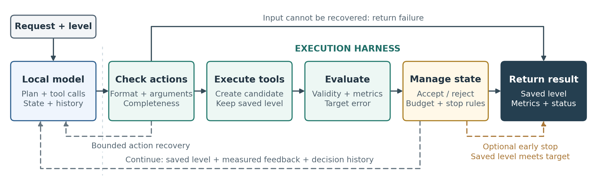
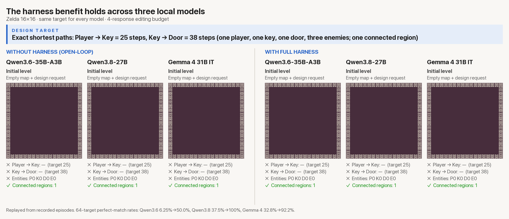
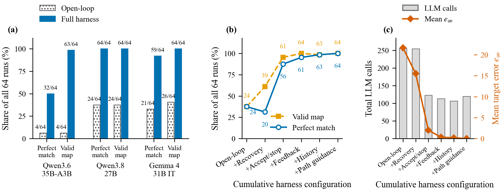
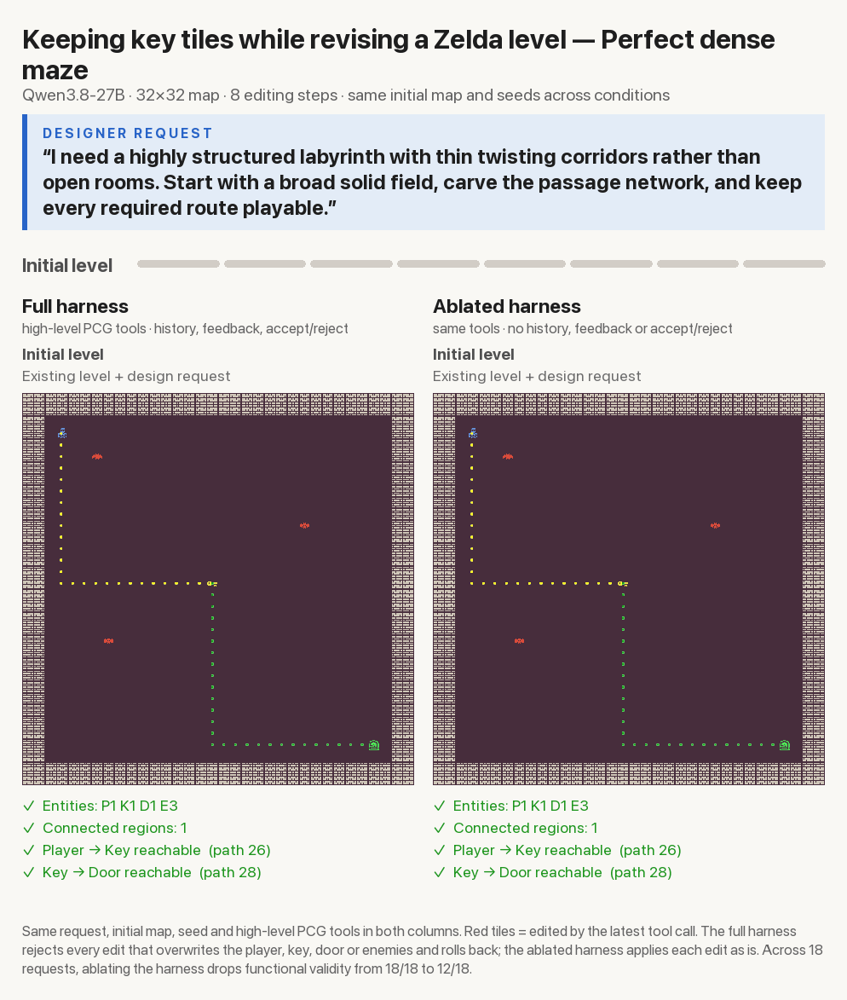
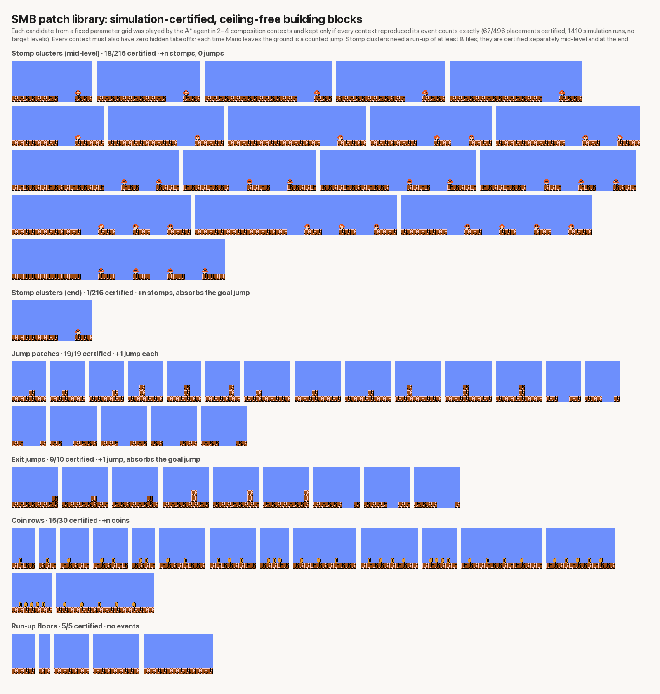

Large language models offer a natural-language interface to procedural content generation (PCG), letting designers request and revise levels through tools. Compact LLMs need less memory and compute, making them promising candidates for local, in-game PCG, yet reliable tool use and level revision remain hard for these models. We address this execution problem through harness design: the harness constrains action formats, recovers unfinished responses through bounded follow-up calls, and evaluates candidate edits before deciding whether to save them. Feedback helps the model correct mistakes, while acceptance rules and early stopping retain successful edits. In a paired Zelda comparison using Qwen3.8-27B, the full harness raises the perfect-match rate from 37.5% (24/64) to 100% (64/64), and the improvement holds for two other models; component studies show which parts of the harness drive it. The harness also helps preserve gameplay requirements during structural revision and supports natural-language control of gameplay events.
Every animation replays a recorded episode with a locally deployed Qwen3.8-27B. Red tiles mark edits from the latest tool call.
Motivation
A designer may ask a PCG system to create connected rooms, lengthen a route, or build a platforming level with a particular number of jumps. Developers may want this to run offline, on a model version they control, with design requests and player data kept on their own machines. Inside a game, the model also has to share memory and compute with rendering and simulation, so it needs to be small enough to run locally. Compact local models meet these requirements, but a model that can describe a level design cannot necessarily execute it. In our experience, they often fail in four ways:
Invalid actions
The model proposes coordinates outside the map or malformed tool arguments.
Truncated responses
Lengthy reasoning exhausts the output budget before a complete tool call is emitted.
Missed targets
An edit runs without errors, yet the resulting level still misses the requested target.
Lost progress
A later edit overwrites a level that was already useful, throwing away earlier progress.
Fine-tuning or distillation could address this, but needs extra data and compute. We instead change how model actions are executed and how level updates are accepted—no model weights are changed. This work extends the tool-using Agentic PCG framework.
Method
The local model plans and emits tool calls. Everything after that is owned by the harness: it validates the calls, runs them on a copy of the saved level, measures the candidate, and decides whether to keep it. Measuring a candidate never automatically overwrites the saved level.

1Constrain and recover actions
A domain-aware action format bounds tool names, tile types and coordinates. If a reasoning response ends without a complete action, one follow-up call—with thinking disabled and a length-limited copy of the draft—asks for executable actions. Recovery never adds editing steps.
2Evaluate before committing
Each candidate L′ = Exec(L, a) is measured, then accepted or rejected. For exact targets, candidates are ranked first by validity, then by target error, and only then by edit cost—so a correct level is never discarded for changing many tiles.
3Feedback and history
The model sees executed actions, errors, measured path lengths, the remaining target error, and why an edit was kept or discarded. Even a rejected edit tells the model which mistake to avoid.
4Stop when done
Execution stops as soon as the saved level meets the target and passes the validity checks—protecting the result and saving inference. Running out of budget with an inexact level still counts as failure.
Iterative editing: the model calls primitive tile edits or high-level PCG tools—a room generator, a depth-first cave digger, cellular automata and connectivity repair—through the same checked loop. Target extraction + construction: the model reads a natural-language request and fills structured target fields. The harness checks them for missing, ambiguous or unsupported requirements; a deterministic builder then joins short, ceiling-free level patches that were certified in simulation, so their event counts add up to the target, and an A* player verifies the result.
Reliable Level Editing
Each model is held fixed and evaluated on the same 64 Zelda targets: two requested path lengths (player→key and key→door, each 10–40 steps) on a 16×16 map, with one player, key, door, three enemies, and one connected region. An open-loop baseline saves every executable edit with no feedback or history; the full harness adds recovery, measured feedback, history, target-prioritized acceptance, path guidance and early stopping. A run is a perfect match if its final saved map is valid and hits both path lengths exactly.
Qwen3.8-27B
24→64 /64
37.5% → 100%. +40 targets, no regressions. 95% CI for the gain: 50.0–73.4 pp.
Gemma 4 31B IT
21→59 /64
32.81% → 92.19%. +40 targets, 2 regressions. 95% CI: 45.3–71.9 pp.
Qwen3.6-35B-A3B
4→32 /64
6.25% → 50%. +28 targets, no regressions. 95% CI: 31.2–56.2 pp.


Action recovery makes more responses executable, but keeping successful edits gives the largest jump: adding acceptance and early stopping raises perfect matches from 20/64 to 56/64—before the model sees any evaluator feedback. Feedback, history and path guidance then fix the remaining errors and bring the result to 64/64. A separate 2×2 comparison shows that either selective acceptance (57/64) or early stopping (59/64) alone is enough to protect successful results, versus 20/64 with neither.
The harness is also cheaper: on the 64 targets it cuts Qwen3.8’s model calls from 256 to 120 and output tokens from 1.80M to 0.42M. On a larger reserved set of 721 Zelda targets, the fixed system reaches 99.03% (714/721) perfect matches with all 721 final maps valid, recovering 658 of 659 truncated responses. In a second domain, BinaryDoor, it reaches 20/32 perfect matches where the open-loop baseline solves none.
High-Level PCG Tools
We ask the model to restructure existing 32×32 Zelda levels—add rooms, caves, mazes, repeating patterns, or reconnect islands—while keeping every entity and route intact. Six request types with three paraphrases each give 18 requests, scored by functional validity plus predefined geometric checks.
| Condition | Valid levels | Structural success | Tool calls |
|---|---|---|---|
| Tile edits, full loop | 100% (18/18) | 33.33% (6/18) | 978 |
| High-level PCG tools, full loop | 100% (18/18) | 77.78% (14/18) | 536 |
| High-level PCG tools, ablated loop | 66.67% (12/18) | 66.67% (12/18) | 288 |
High-level tools let the agent express a large structural change in a single call, with 45% fewer tool calls. The execution loop is what keeps the level playable: removing history, numerical feedback and acceptance control leaves six of the 15 initially valid maps broken, including all three dense-maze requests. This protection has a cost—about 850k tokens for the full loop versus 384k for the ablation.


Language Control
In SMB, the model reads a request and extracts structured targets; the harness rejects incomplete, ambiguous or unsupported targets before anything runs. A deterministic builder then joins short level patches that were certified in simulation, and an A* player verifies what actually happens. We distinguish level-object targets (what the map contains: pipes, enemies, coins, blocks) from gameplay-event targets (what happens during play: coins collected, enemies stomped, jumps from the ground).
Each candidate patch—enemies behind pits, an obstacle or gap, a row of coins—is played in two to four fixed contexts and kept only if every playthrough reproduces its event counts exactly, with no ceilings and no uncounted takeoffs. Of 496 candidate placements, 67 pass. Stitching them, the builder satisfies 204 of the 210 supported structured targets (up to four stomps, five coins and six jumps), 196 with its first plan and all within nine simulation runs. The six remaining targets request neither stomps nor jumps, which a ceiling-free level cannot produce. An earlier library of 16 whole-level layouts covered only 96 targets, and primitive tile editing satisfies only 3 of 29 development targets even though all its levels are playable.

On 24 valid requests in English, Chinese and mixed language, the model extracts every target field correctly for 23/24, and the builder satisfies all 23. Given correct targets, the builder succeeds on all 24, so the remaining error is interpretation; a keyword parser attached to the same builder succeeds on only 12. In the one failure the model left out explicit zero-event requirements—and the harness rejected the incomplete target rather than building the wrong level.
All eight ambiguous or unsupported requests are rejected before execution, for example:
Limits: target extraction can only enforce what the target representation captures. On 12 Zelda scene descriptions involving shapes, guard rows, vaults and relative placement, the full system stays functionally valid in 12/12 cases but meets every scene detail in only 1/12. Broader language control needs richer target representations and evaluators.
Deployment
We reran the main studies with Qwen3.8-27B quantized to Q4_K_M in LM Studio on an M1 Max MacBook Pro with 32 GiB of unified memory. The completed-output results closely match the BF16 server runs.
| Study | BF16 server | Laptop (Q4_K_M) |
|---|---|---|
| Zelda paired targets, perfect match | 100% (64/64) | 100% (64/64) |
| SMB language requests, success | 95.83% (23/24) | 91.67% (22/24) |
| Ambiguous / unsupported requests rejected | 8/8 | 8/8 |
| Structural revision, tile edits → high-level tools | 6/18 → 14/18 | 5/18 → 15/18 |
Successful Zelda episodes average 878 s on the laptop, so these results support portability, not real-time in-game generation. The laptop baseline was not rerun and the comparison does not isolate quantization effects. Laptop SMB levels were built with the earlier layout library; rebuilding the 22 correctly extracted targets with the patch-stitching builder succeeds in every case.
Code
Local-Deployable-AgenticPCG is self-contained: it bundles the six-domain PCG framework (Binary, BinaryDoor, Zelda, Sokoban, Lode Runner, SMB), the harness controls, fixed benchmark inputs, experiment runners and evaluators. The offline smoke test needs neither a GPU nor model weights.
# Python 3.12, macOS or Linux
python3.12 -m venv .venv && source .venv/bin/activate
python -m pip install -r requirements/client-lock.txt
python -m pip install -e ".[test]"
pcg-reproduce smoke --output runs/smoke # offline example
pcg-reproduce z64 --model qwen38 --dry-run # inspect the paired 64-target studyCitation
If you find this work useful in your project/research, please consider citing our preprint:
@article{jiang2026enabling,
title = {Enabling Agentic PCG with Harness-Controlled Local Models},
author = {Jiang, Zehua and Earle, Sam and Khalifa, Ahmed and Togelius, Julian},
journal = {Available at SSRN 7502203},
year = {2026},
month = sep,
doi = {10.2139/ssrn.7502203},
url = {https://ssrn.com/abstract=7502203},
note = {Available at SSRN: \url{https://ssrn.com/abstract=7502203}}
}
@article{jiang2026agentic,
title = {Agentic PCG: Procedural Content Generation via Tool-using LLMs},
author = {Jiang, Zehua and Earle, Sam and Khalifa, Ahmed and Togelius, Julian},
journal = {Available at SSRN 6499021},
year = {2026},
note = {Available at SSRN: \url{https://ssrn.com/abstract=6499021}}
}